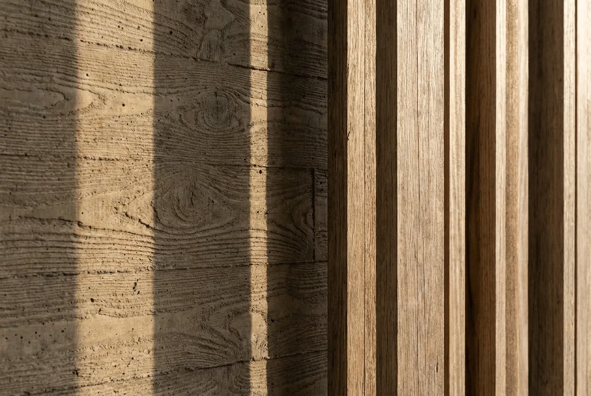

01 事務所理念
合宜的構築,
合宜的構築,
如石的恆久
「合石」二字,取「合宜的構築、如石般恆久」之意。我們不追求一時的造型聲量,而是回到建築最根本的命題——結構、材料、光線與尺度,如何共同支撐起一段真實的生活。
從一棟私人住宅到一座公共建築,我們以同樣的嚴謹對待:讓空間清晰可讀、讓材料誠實呈現、讓光在一日之間自然地走過每一個房間。

材料細部研究 — 清水模與實木格柵的交界
2009
事務所成立年份
80＋
完成建築與室內案件
12
國內外設計獎項
30＋
長期合作專業團隊
02 精選作品
查看全部作品
近期代表案例
03 服務範疇
從一筆草圖,到一個落成的場所
我們提供從概念到監造的整合服務,讓設計意圖在每個階段都被完整守護。
01
建築設計
從基地分析、量體配置到細部設計,建立清晰而誠實的構築邏輯。
02
室內設計
延續建築語彙,以材料、光線與動線,雕琢日常生活的質地。
03
都市與景觀
串連建築與環境,思考人、地景與公共生活之間的關係。
04
監造與管理
嚴謹的工地監督與專案管理,確保設計品質在現場被完整落實。